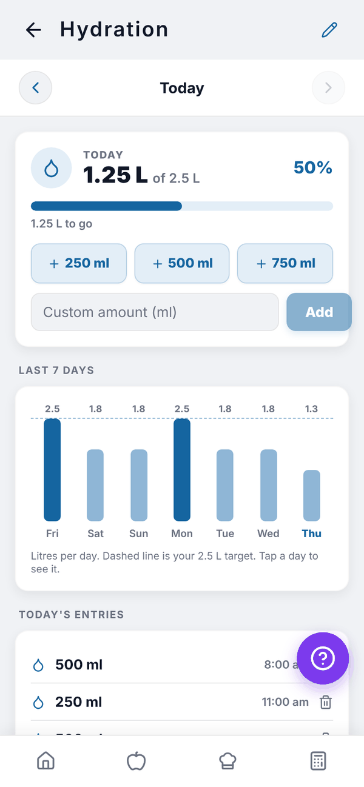
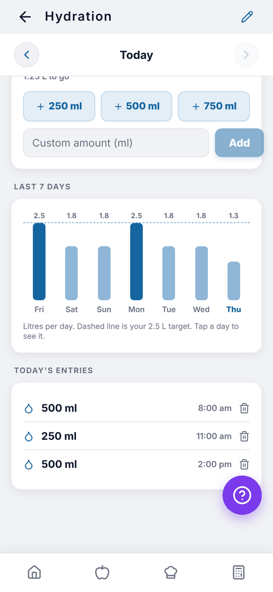

Totality Nutrition guide
Water
Log water with one tap, set your daily target and see the last 7 days.
Hydration tracks your water against a daily target. It's on Free, Trial and Paid. Open it from the Hydration tile on Home.


Log water#
- Open Hydration.
- Tap + 250 ml, + 500 ml or + 750 ml.
- For another amount, type it in Custom amount (ml) and tap Add.
The day card shows your total, your target, a percentage and how much is left ("1.25 L to go"). Once you reach it you'll see "Target reached. Nice work."
Look at other days#
Use the arrows beside the date, or tap a bar in Last 7 days. Each bar is one day in litres; the dashed line is your target, and darker bars are days you hit it. The entries list below shows that day's drinks with the time. Tap the bin on an entry to delete it.
Set your target#
Tap the pencil at the top right. In Daily Water Target, type your goal and tap Save Target. The default is 2,500 ml (2.5 L).
Questions#
Can I log water in fl oz?
Yes. Set Water to fl oz in Settings, Units and region. The buttons and target then use fl oz.
Does water count toward my calories?
No. Water is tracked on its own.